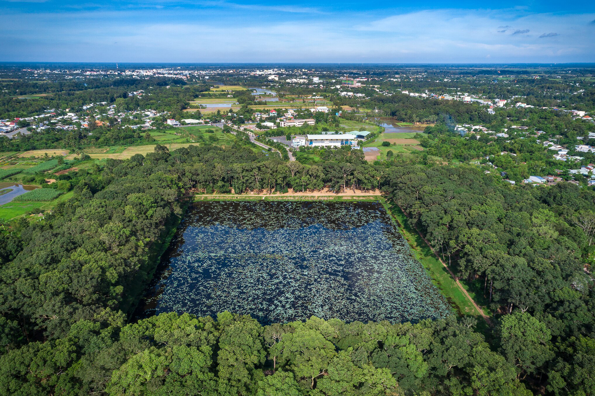

| Homepage | News | Form | About Me |
AO BA OM
Ao Ba Om is a popular tourist destination in Tra Vinh province and the Mekong Delta region. This gorgeous site is in Ward 8, Tra Vinh city, about 5 kilometers southwest of the provincial capital and 500 meters east of Highway 53. The most important is a primaeval forest that has been maintained in its entirety, measuring 30 – 100 m broad and 2 km long, with thousands of indigenous dune flora species, including almost 500 hundred-year-old oil trees. Wind and rain erosion is a natural process. Soil and sand, in particular, were carried away, leaving strangely shaped old roots. It has once piqued the interest of travelers from all over the world, as well as poets and musicians. A calm year-round road, meandering, numerous steep slopes, lies beneath the overlapping foliage of the primaeval forest. Ao Ba Om was dubbed "Da Lat betwixt Delta" because of its simple association.

In Tra Vinh Province, Ba Om Pond (also known as Vuong Pond, Square Pond, Ao Bà Om, Ao Vuông) is a distinctive and well-known attraction. Ba Om Pond is located in Ward 8, Tra Vinh City, Tra Vinh Province, at "khóm" 3. It is located around 7 kilometers southwest of the city center. Because of its square shape (300 m broad by 500 m long), Ba Om Pond is also known as Square Pond. The water is constantly clean and green, and the pond is always level. In the pond, there are some lotus and water lilies.
Ba Om Pond resembles a massive mirror. The pond is surrounded by verdant grass and mature trees. Motorcycles are allowed to be driven around Ba Om Pond by locals. Ba Om Pond is surrounded by sandhills with tall and large lines of Hopea and Dipterocarpus alatus trees. The trees have been around for centuries. The roots come in a variety of shapes, which visitors can see. Hundreds of old trees with roots above ground can be found in the area.


The roots come in a variety of sizes and forms, and you can imagine important shapes in them. Ba Om Pond has drawn a huge number of locals and visitors who want to walk, relax, and take wonderful photos because of its stunning sight, unique tree formations, and fresh air.
SQUARE POND'S STORY Villagers in Cambodia are claimed to have held a competition in which a male and female team dug a trench. The men relaxed while digging since they were confident in their abilities. The challenge was eventually won by a group of women led by Om. The ladies, in reality, utilized deception to put off the men's duties. The larger pond was named after the female leader Om, while the smaller pond remains close Ba Om Pond.